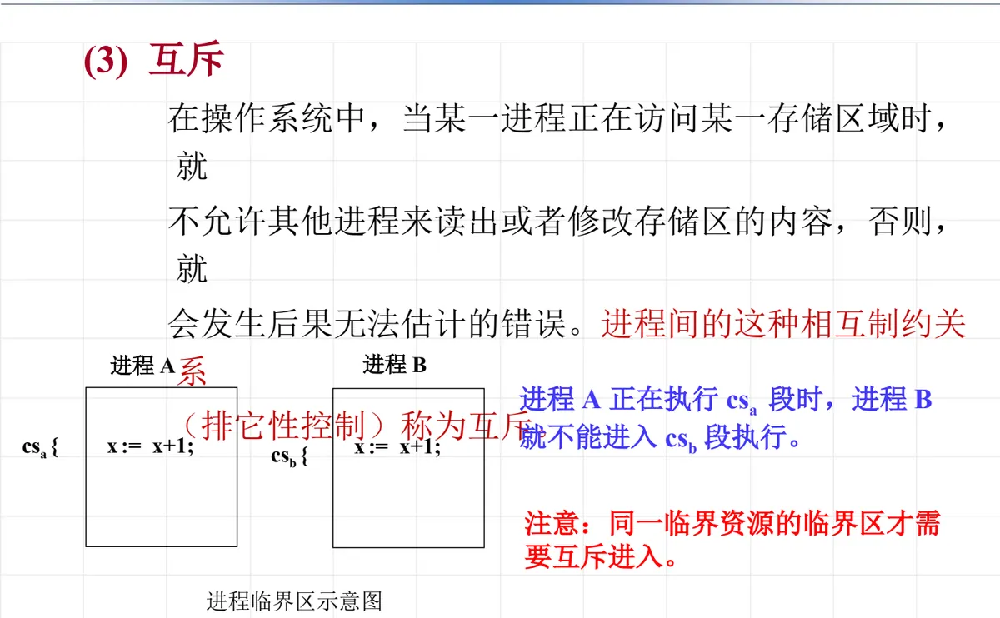

操作系统原理 · 第 4 章 进程及进程管理
4.4 进程之间的相互制约关系
进程被创建出来之后，问题并没有结束：并发执行的多个进程各自以不同的速度向前推进，只要它们之间有协作，就必然互相牵制。这一节把这种牵制分成两类——竞争资源引起的间接制约和共享数据引起的直接制约——并给出直接制约的两种表现形式：互斥与同步。理解这两者是后面学习同步机构、信号量乃至死锁的基础。
1. 进程之间的两种相互制约关系
并发执行的多个进程以各自的速度向前推进，但是相互协作的多个进程之间不是孤立的，存在相互制约的关系。这样的例子在生活与系统中随处都是：多个终端订票、医院看病与化验、输入与打印、接力赛跑、视频播放、图像处理……
这些制约关系按成因分成两种情况：
- 由于竞争系统资源引起的间接相互制约关系。比如处理器的共享（分时）、内存分配、其他硬件资源。进程之间并没有商量好要协作，只是因为都想用同一件东西而被迫互相等待，所以是「间接」的；
- 进程之间存在共享数据而引起的直接相互制约关系。比如共享文件、共享变量、相互协作。进程之间为了完成同一件事而必须按约定的次序推进，所以是「直接」的。
协调进程之间的直接相互制约关系，就是要协调各进程前进的步伐，即实现进程的同步；而要实现进程的同步，必须支持进程之间的信息交换，这就是进程间的通信。
2. 直接制约关系的三种约束形式
并发进程之间的直接相互制约关系分为两种：进程互斥和进程同步。把它们的约束条件抽象出来，无非是三种形式：
- 操作 A 必须在操作 B 之前执行；
- 操作 C 必须在操作 A 和 B 都完成之后才能执行；
- 操作 D 和操作 E 不能在同一时刻执行。
前两种说的是「先后次序」，对应同步；第三种说的是「不能同时」，对应互斥。后面两节分别展开。
3. 进程互斥
（1）例 1：两个进程共享一个变量 x
设 x 代表某航班机座号，p1 和 p2 是两个售票进程，售票工作就是对变量 x 加 1。这两个进程在一个处理机 C 上并发执行，分别具有内部寄存器 r1 和 r2。每个进程要做三件事：把 x 读进自己的寄存器、寄存器加 1、再写回 x。
两种可能的执行次序如下：
p1: r1 := x; r1 := r1+1; x := r1;
p2: r2 := x; r2 := r2+1; x := r2;设 x 的初值为 10，两种情况下的执行结果截然不同：
- 情况 A（p1 的三条语句先全部执行完，p2 再执行）：x = 10+2，卖出了两张票；
- 情况 B（两个进程的语句交错，p2 在 p1 写回之前也读到了 x=10）：x = 10+1，两张票卖出却只加了一次。
由此得到一条重要特点：当两个进程公用一个变量时，它们必须顺序地使用，一个进程对公用变量操作完毕后，另一个进程才能去访问和修改这一变量。
（2）临界区
把「访问与修改公共变量的那几行代码」单独提出来，就是临界区：它是进程中对公共变量（或存储区）进行访问与修改的程序段，称为相对于该公共变量的临界区。在示意图中，进程 A 的临界区记作 csa、进程 B 的记作 csb，两者的内部都是对同一变量执行 x := x+1; 这样的操作。
（3）临界区的调度原则
要让多个临界区正确地互斥执行，调度必须满足三条原则：
- 互斥访问：一次至多允许一个进程进入临界区内；
- 有限等待：一个进程不能无限地停留在临界区内，也不能无限地等待进入临界区；
- 空闲让进：当没有进程在执行临界区代码时，必须允许等待的进程或申请进入的进程进入临界区。
这三条常被概括为一句口诀：无空等待、有空让进、择一而入、算法可行。
（4）互斥的定义
在操作系统中，当某一进程正在访问某一存储区域时，就不允许其他进程来读出或者修改存储区的内容，否则就会发生后果无法估计的错误。进程间的这种相互制约关系（排它性控制）称为互斥。用示意图来说：进程 A 正在执行 csa 段时，进程 B 就不能进入 csb 段执行。

x := x+1，A 进入 csa 时 B 不得进入 csb（原课件第 65 张）这里有一条容易忽略的限制：只有针对同一临界资源的临界区才需要互斥进入。访问不同资源的临界区之间没有竞争，不必互相等待。
4. 进程同步
（1）什么是进程同步
同步针对的是协作关系：若干进程为了共同完成一项任务，必须按照约定的先后次序推进，谁也不能跑到前面去。它对应的正是上一节列出的前两种约束形式——「操作 A 必须在操作 B 之前执行」和「操作 C 必须在操作 A 和 B 都完成之后才能执行」。
（2）例：医院就诊
看病与化验是两件必须配合的事，可以把它们看成两个进程的活动：
- 化验活动：判断「有化验单？」——有，则进行化验、最后开出化验结果；
- 看病活动：看病 → 要病人去化验 → 等化验结果 → 继续诊病。
两者的同步约束条件是显然的：化验必须在拿到化验单之后进行，看病必须等化验结果出来才能继续。少了任何一条，流程就会出错。
（3）例：共享缓冲区的计算进程与打印进程
另一个更贴近系统的例子是计算进程 cp 与打印进程 iop 共享一个缓冲区 buf，两者之间同样存在先后约束：
- （1）
cp进程把数据送入buf后，iop进程才能取出数据去打印； - （2）
iop进程把数据取出后，cp进程才能把下一个数据送入buf。
这两条约束正好构成一对「一进一出」的配合：前一条保证不打印空数据，后一条保证不覆盖尚未打印的数据。原课件在这里同样留了一个问题——「同步约束条件？」——要求读者自己把它写全。
本节小结
- 并发进程之间不是孤立的。相互制约关系分两种：竞争系统资源（处理器分时、内存分配、其他硬件资源）引起的间接制约；共享数据（共享文件、共享变量、相互协作）引起的直接制约。
- 协调直接制约关系就是协调各进程前进的步伐，即实现进程同步；而实现同步必须支持进程之间的信息交换，这就是进程间的通信。
- 直接制约关系分进程互斥与进程同步两类，抽象为三种约束形式：A 必须在 B 之前执行、C 必须在 A 与 B 都完成之后执行（同步），D 与 E 不能在同一时刻执行（互斥）。
- 互斥的由来：两个进程共用变量 x（如售票对 x 加 1）时，交错执行会导致结果错误（x 初值 10 时，正确应为 10+2，交错则可能只得到 10+1），因此必须顺序地使用公用变量。
- 临界区是对公共变量（或存储区）进行访问与修改的程序段；临界区的调度原则是互斥访问、有限等待、空闲让进，口诀为「无空等待、有空让进、择一而入、算法可行」。
- 互斥是排它性控制：一个进程访问某存储区域时不允许其他进程读出或修改，A 执行 csa 时 B 不能进入 csb；注意只有针对同一临界资源的临界区才需要互斥进入。
- 同步针对协作：医院就诊（化验与看病必须一前一后）、计算进程 cp 与打印进程 iop 共享缓冲区 buf（送入后才能取出、取出后才能送入）都是典型例子，两条约束合起来才保证结果正确。